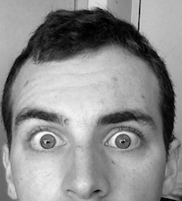
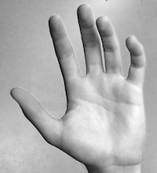
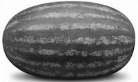

For this part of the project, the goal is to sharpen an image. I did this by first removing the high frequencies by convolving with a two dimentional gaussian (this approximates a low-pass filter). Then, to obtain the high frequencies, I subtracted this blurred image from the original image. Finally, to get the sharpened image, I added the high frequencies (multiplied by a scaling factor) back into the original image. For color images, this process is done to each color channel individually. Below is an example of all the steps taken on a grayscale image and the results with a color image (look closely at the flower petals to notice the sharpening best).
| Original Image | Blurred Image | High Frequency Image | Final Sharpened Image |
| Original convolved with a gaussian | Original - Blurred | Original + High Frequency |
| Original Image | Final Sharpened Image |
The goal of this part of the project is to create hybrid images. A hybrid image is a static picture that changes in appearance as a function of viewing distance. The idea is that when the image is viewed up close the high frequencies dominate our visual perception, while the low frequencies dominate from farther away. By combining the high and low frequencies of two different images, we can kill two birds with one stone!
The general approach for this part of the project is conceptually simple, but computationally difficult. I first obtained the low frequency of one image by convolving that image with a gaussian. I obtained the high frequency of another image by convolving with a gaussian and subtracting from the original image. I then merged the low frequency of image one and high frequency of the second by simply taking the average. The result of this is the hybrid image.
Below you can see this process in action. The first row is the first image, and then that image convolved with a gaussian. The second line shows the log magnitude of the Fourier transform of each of these images. As you can see, the transform of the original shark image is brightest toward the center and is relatively uniform toward its corners. By comparison, the transform of the blurred shark is just as prominent in the center, but tapers out toward the corners. This shows how convolving with a gaussian approximates a low-pass filter.
The third row shows the the second image and its high frequency components (calculated by gaussian convolving and subtracting as described above). The fourth row displays the log magnitude of the Fourier transform of these images. Since this is an approximation of a high pass filter, the opposite of what we saw in the low pass filter occurs in the frequency domain. The transform corresponding to the high frequency image is darker in the center and brighter towards the outsides in comparison to the transform of the original Dumbledore image. This illustrates the high pass filtering.
Finally, the last image is the merge of the low-passed shark and the high passed Dumbledore. You should see Dumbledore clearly from close up and the shark more easily from a distance.
In addition to the work I explained above, I have a few notable ideas and parameters. First, for each set of images, I needed to vary the size and shape of the gaussian convolution in order to blur the image more/less (this corresponds to getting a sharper/more full image for the high frequency image). Second, for some of the hybrid images, I tryed out using a gaussian with a standard deviation that was a bit too large for the size of the grid it was stored in. This didn't only make computation faster (convolution with a smaller grid will go faster), but it also more closly resembles a true low pass filter (a box), but has the drawback of being lossy. Finally, I included a parameter called beta to not take away all of the low frequency, only a percentage of it when creating the high frequency image. Below are the results of two other hybrid images I created using the above approach and including these additional features and parameters.
Both of these results turned out decently well. The key to doing a good hybrid image is choosing a large enough standard deviation in the gaussian filter. I have found that this is often in the double digits (like with the Dumbledore-shark and elephant-flower) or the single digits (like with the coin-lion). It is also important to align the images well. For example, I wanted the shark and Dumbledore's bodies to lign up and I wanted the flower's petals to span the same distance as the elephant ears. I was lucky that all of my images worked out decently well. However, one way to make a poor hybrid image would be to low pass filter an image that is only distinguishable through high frequencies and high pass filter an image that has mainly low frequencies. This would make the hybrid of the too completely indistinguishable from any distance.
I included color to try to enhance the effect of hybrid imaging. Below are color hybrid images. The both images are color for the shark-Dumbledore and lion-coin hybrids, whereas only the flower is color for the flower-elephant hybrid.
Although the Hybrid Images Siggraph paper used color for the high frequency photo and black and white for the low frequency photo (with the bike and motorcycle), I found for these particular hybrid images that that didn't seem to view as well. I like viewing it either when both images are color or just the low frequency image is. My thoughts on this are that some of the high resolution images, the elephant in particular, is pretty much gray scale anyway so color does not add much. Also, if the high resolution image is very sharp, there isn't much color to add on anyway. On the flipside, the low frequency colors in the blurred image can help the viewer recognize the object in question (like the blue helps viewer identify the blurry shark).
A gaussian stack is just like a gaussian pyramid, except without the resizing. Therefore, each level of a gaussian stack is simply the original image passed through a gaussian filter. The standard deviation of this filter grows in size the further into the stack you go. Just as the high frequencies of an image can be obtained by subtracting a gaussian filtered image by its original image, so too can band pass images be obtained by subtracting two adjacent layers of the gaussian stack. This is how the laplacian stack is constructed. Below, are two examples of gaussian and laplacian stacks. The first example is a hybrid image painted by Salvador Dali of both his wife and Abraham Lincoln. The second is once again my own hybrid image creation of Dubledore and a shark. Notice how the Laplacian stack only has a specific range of frequency that goes from high to low as you move through the stack.
| Dali Painting Gaussian Stack | |
| Dali Painting Laplacian Stack | |
| Hybrid Image Gaussian Stack | |
| Hybrid Image Laplacian Stack |
Multiresolution blending is a technique to more seamlessly blend images together. Conceptually, this is done by taking the Laplacian stack of two images, and combining each band-pass frequency by taking a certain amount of each when close to the border between the two. The amount taken from each image to go into the final blended image is determined by a the gaussian stack of a mask. A mask is an image of the same size as the two getting blended and has values 0 and 1 to determine the border. Thus, at level l of all three stacks (La, Lb, and Gm represent the laplacian stack of image a, laplacian stack of image b, and the Gaussian stack of the mask image, respectively), the blend stack at level l becomes B_l = Gm_l*La_l+(1-Gm_l)*Lb_l. The laplacian stack of blended images B, can be combined by summing all of the B_l values in the stack, resulting in the final blended image.
This process can be visualized below. The first example is blending images of my face and my hand to yield my eye on my hand. Below that you can see the laplacian stacks for my face and my hand, and the gaussian stack for the mask image. For a certain level in the stack, picture the face band-pass getting multiplied by the guassian blurred mask at the same level (Gm_l) and the hand band-pass getting multiplied by 1-Gm_l. Summing these two things yields a band-pass level of the blended image, and summing all the band-pass levels yields the final blended image! Below the first example you can see the results of my attempts to blend two more different images with simpler masks.
|  | ||
|  | ||
|  | ||
The results for this section are very interesting. Even though the hand-eye blend had a much more difficult mask, the output image is much better than both the waterball and the liger. In a way, both of the other two are failed examples. I beleive this is because the high frequency components in addition to their overall brightness are just too different. The apple and the orange blended well because they were overall the same brighness and they were similar, relatively uniform colors. This is also true with my hand and eye, the lighting was the same because I took the pictures in the room back to back, and I was blending my skin with more of my skin, making it easier to blend (although in the top you can see my hand skin starting to blend with the bottom of my eyebrow). These are two very different examples from the waterball and the liger. Both the watermelon and the tiger have stripes that make blending very difficult. The words on the football don't help either. These high frequency components get blended using the sharpest level in the gaussian stack, meaning that they get cut off the soonest. This is why both images simply look like I took two halves and slapped them together (the lower frequencies blended better). If doing this again, I would choose something with more uniformity (lower frequencies) to make the blending easier.
I included color to try to enhance the effect. Below you can see the hand-eye where both images are in color, a color face blended with a grayscale hand, and a grayscale face blended with a color hand.
 |
||
All of these examples appear to be pretty well blended! I think I like the color face blended with the grayscale hand the best, it's eerie.
The coolest thing I learned from this assignment would probably be how to blend images using the laplacian and gaussian stacks. I also think it is really cool how to create hybrid images by taking the high frequency from one image and the low frequency from another.